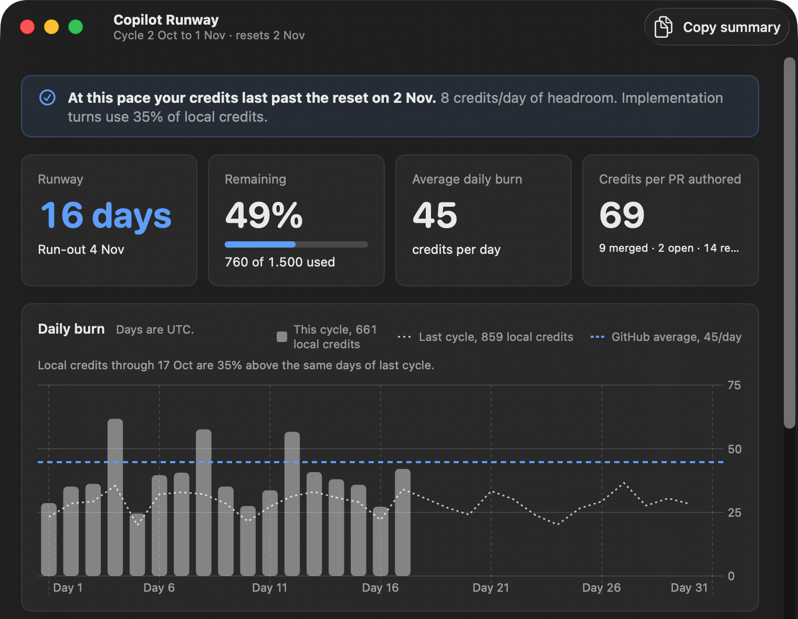
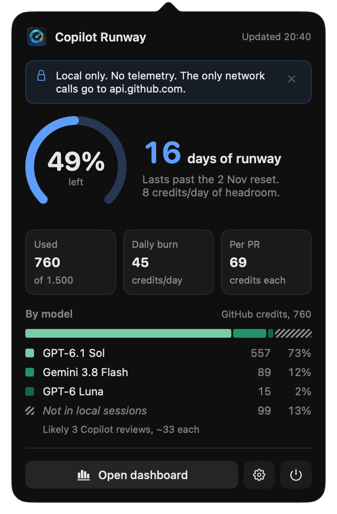

macOS menu bar app for GitHub Copilot
The menu bar shows the percent of credits left and the days until they run out at your current pace.
brew install --cask wilsonfaustino/tap/copilot-runway
Free and open source (MIT). macOS 15 or later. Latest release.
"At this pace you run out on Oct 21,
10 days before the reset on Nov 1."
One sentence, updated every 5 minutes. You see it while you can still change how you work.

Percent left and days of runway, for example 49% · 16d. The gauge turns orange when you will run out before the reset, and red when less than a day is left.
The run-out date, average daily burn, credits per PR authored and credits per model.

Credits by kind of work (implementation, debugging, review and more), by model and by agent. "Copy summary" puts a plain-text report on the clipboard for a quota request.
The app reads your existing gh login and the local OpenCode, Pi and omp session files. Open it and the numbers are there.
gh installed and logged inThe only network calls go to api.github.com: your credits every 5 minutes, outcome counts if you set an organization, and a release check once a day. Your gh token stays in memory for one request. The app does not decode or keep prompt or answer text.
brew install --cask wilsonfaustino/tap/copilot-runway